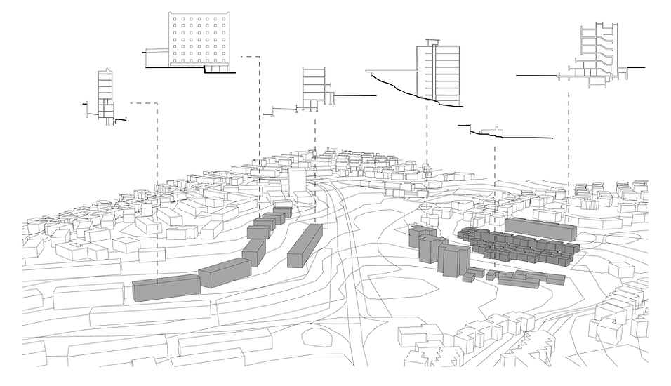
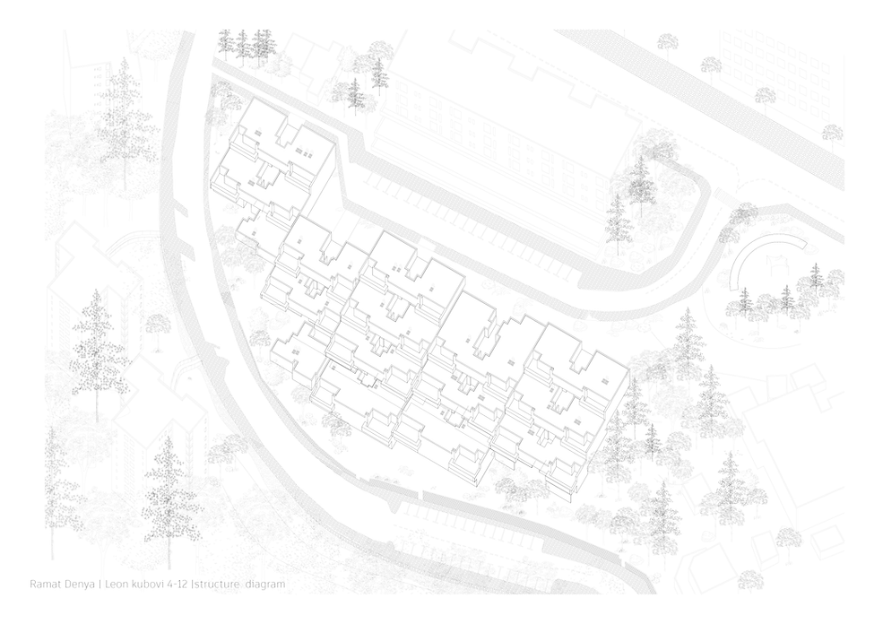
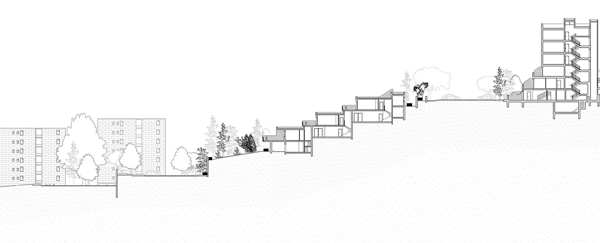
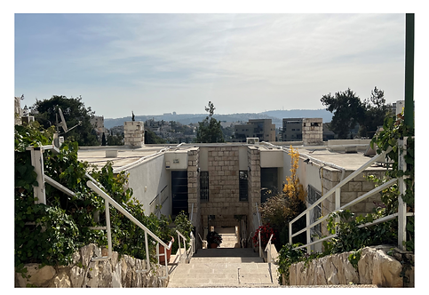
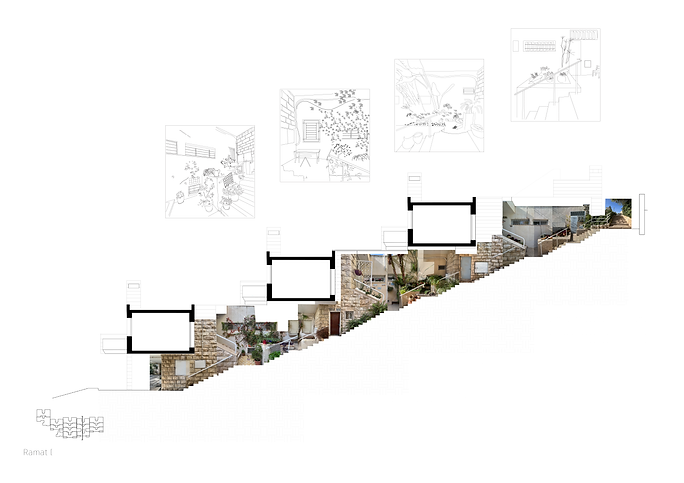
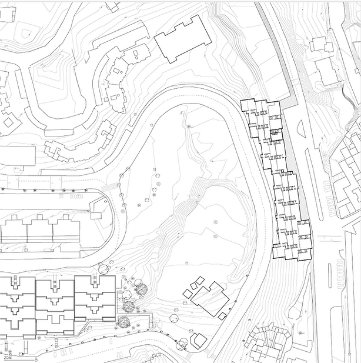
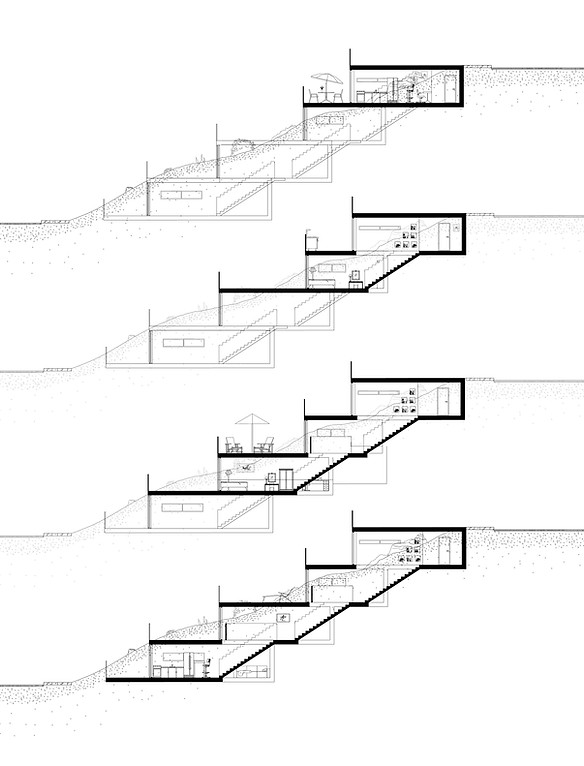
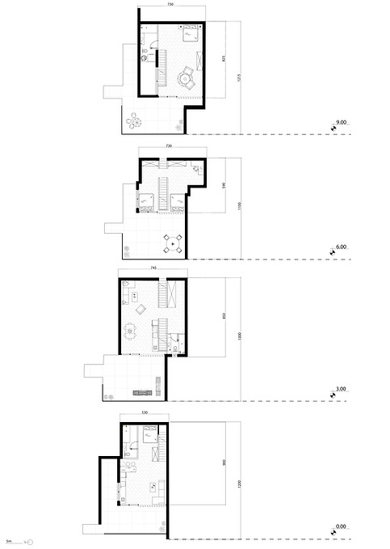
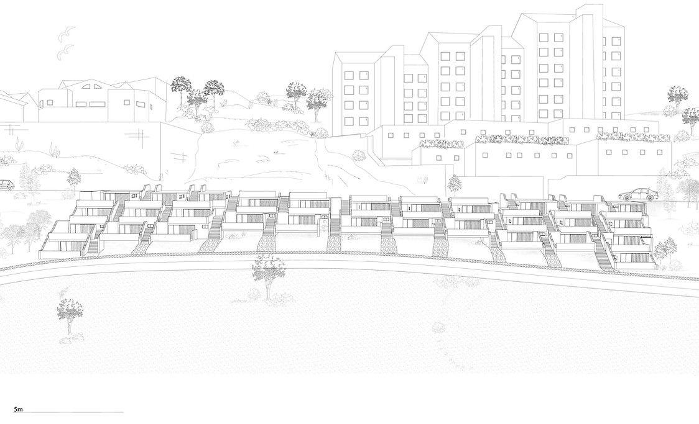
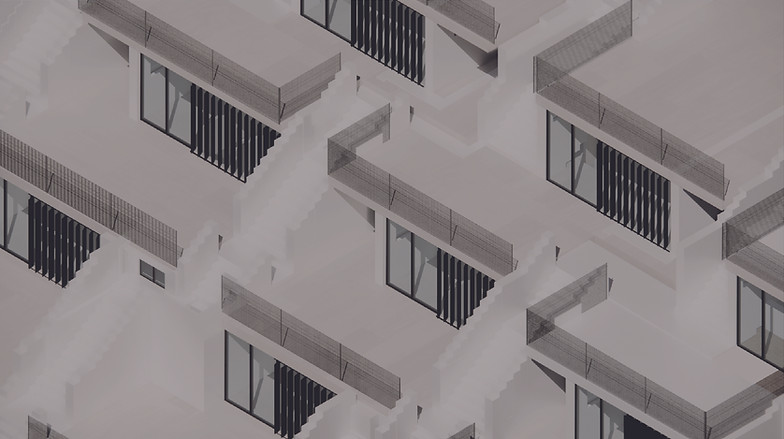

The term "carpet buildings" refers to architectural structures typically designed to adapt to and integrate with the natural topography, often situated on hilly or sloped terrains. These buildings are characterized by their horizontal, sprawling layouts that "hug" the contours of the land, creating a seamless interaction between the built environment and the surrounding landscape.
In our studio, we explored a group of such buildings, each responding differently to the ground and topography, employing varied design approaches to emphasize unique relationships between architecture and the terrain. This allowed for a rich investigation into how built forms interact with and adapt to their environment.



The ingenious design of carpet buildings ensures that everyone—residents and passersby alike—can enjoy unobstructed views of the landscape. However, this approach comes with a significant drawback: it is highly space-intensive. In today's era of population density and diminishing availability of open land, such sprawling designs present a challenge, making them less practical in the context of modern urban constraints.
The flexible structure of the carpet building fosters interactions not only among neighbors but also with passersby. The staircase, traditionally a private element belonging to the building's residents, transforms into a public asset, serving as a functional shortcut for the city and integrating the building seamlessly into the urban fabric.




During the design phase, I aimed to create a carpet building that not only adapts to a complex topography but also allows for a diverse distribution of apartments across the terrain. Each strip of the building offers a unique apartment layout, with every unit connected by a staircase that serves as a unifying element within the home. Additionally, each floor is strategically positioned atop the one below, creating a stepped configuration that follows the natural slope and enhances the integration with the landscape.
